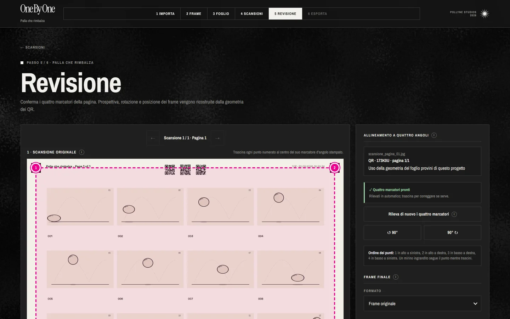
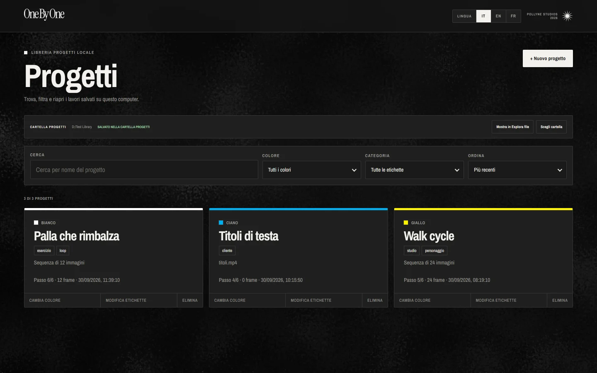

Video o sequenze di immagini
Importa un video ed estrai i frame alla risoluzione originale, oppure parti da una sequenza di immagini già numerata.
Pollyne Studios
ONE BY ONE trasforma un video o una sequenza di immagini in fogli da stampare. Disegni sulla carta, scansioni, e l'app ricompone l'animazione. Tutto sul tuo computer, senza internet.
Un clic scarica il programma e il suo README. Tutte le opzioni ›

Dal video alla carta.
Dalla carta all'animazione.
01Funzioni
Il digitale fa il lavoro noioso (estrarre, impaginare, riconoscere, ritagliare), così il tempo resta per disegnare.
Importa un video ed estrai i frame alla risoluzione originale, oppure parti da una sequenza di immagini già numerata.
Impagina i frame su A4 o A3, in orizzontale o in verticale, con numeri e margini puliti. Un PDF, pronto per la stampante.
Ridisegna ogni frame sulla carta con i tuoi strumenti: matita, china, acquerello. L'app non tocca il tuo segno.
Ogni foglio porta i suoi codici QR: l'app sa a quale progetto appartiene e in che ordine va, anche da un PDF di molte pagine.
Quattro marcatori stampati correggono prospettiva e rotazione: ogni frame viene ritagliato esattamente dove l'hai disegnato.
Sequenza PNG o JPG, GIF animata o video MP4, fino al 4K. Il bordo di carta naturale, se lo vuoi, resta.
02Come funziona
Gli stessi che trovi in alto nell'app. Puoi tornare indietro in ogni momento: il progetto si salva da solo.
Scegli il video o le immagini di partenza.
Decidi quanti frame estrarre e guarda l'anteprima.
Scarica il PDF e stampalo.
Disegna, scansiona e importa i fogli.
Controlla i marcatori e ricostruisci i frame.
Scegli il formato e salva l'animazione.
03Schermate
Schermate reali, con un progetto di prova: una palla che rimbalza in dodici disegni.

04Scarica
Un clic scarica due file: il programma e il suo README, uno accanto all'altro, senza cartelle da aprire.
Windows 10 o 11 · 64 bit (Intel o AMD)
macOS 12 Monterey o successivo
Non sai quale? Menu Apple › Informazioni su questo Mac: “Chip Apple M…” è Apple Silicon, “Processore Intel” è Intel.
L'app non è ancora firmata con un certificato Microsoft o Apple, quindi al primo avvio il sistema chiede una conferma (“Esegui comunque” su Windows, “Apri comunque” su Mac). Il README spiega ogni passaggio, in italiano, inglese e francese. Se il browser chiede il permesso di scaricare più file, consenti: sono il programma e il suo README.
05Supportaci
ONE BY ONE è gratuito, senza pubblicità né abbonamenti. Se ti è utile, puoi aiutarci a farlo crescere con una donazione libera, di qualsiasi importo.